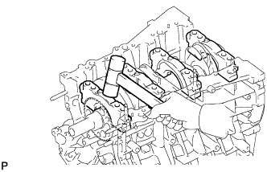

БЛОК ЦИЛИНДРОВ > ПОВТОРНАЯ СБОРКА |
| 1. УСТАНОВИТЕ РЕЗЬБОВУЮ ШПИЛЬКУ |
Вверните новые резьбовые шпильки.
| *A | Передняя сторона | *B | Верхняя сторона |
| *C | Нижняя сторона | *D | Задняя сторона |
| 2. УСТАНОВИТЕ ШТУЦЕР ПОДАЧИ МАСЛА № 1 В СБОРЕ |
 |
Используя торцевую шестигранную головку на 5 мм, установите 3 масляных форсунки, закрепив их 3 болтами.
| 3. УСТАНОВИТЕ ПОРШЕНЬ С ПАЛЬЦЕМ В СБОРЕ |
 |
С помощью отвертки установите новое пружинное стопорное кольцо с одной из сторон отверстия под поршневой палец.
Медленно нагрейте поршень до температуры примерно 80°C (176°F).
 |
Покройте поршневой палец моторным маслом.
Совместив метки внешней стороны на поршне и шатуне, вставьте шатун в поршень, а затем надавливайте на поршневой палец большим пальцем руки до тех пор, пока поршневой палец не соприкоснется с пружинным стопорным кольцом.
| *1 | Метка передней стороны |
Проверьте условия посадки поршня на поршневой палец, попробовав подвигать поршень по пальцу взад-вперед.
С помощью отвертки установите новое стопорное кольцо с другой стороны отверстия под поршневой палец.
| 4. УСТАНОВИТЕ НАБОР ПОРШНЕВЫХ КОЛЕЦ |
Вручную установите маслосъемное кольцо (расширитель) и 2 боковых направляющих.
С помощью расширителя поршневых колец установите 2 компрессионных кольца так, чтобы нанесенная краской метка была расположена справа.
| *1 | Метка, нанесенная краской |
| *2 | Компрессионное кольцо № 1 |
| *3 | Компрессионное кольцо № 2 |
 | Правая сторона |
 |
Установите поршневые кольца таким образом, чтобы замки колец располагались, как показано на рисунке.
| *1 | Компрессионное кольцо № 1 |
| *2 | Компрессионное кольцо № 2 |
| *3 | Нижняя боковая направляющая |
| *4 | Верхняя боковая направляющая |
| *5 | Расширитель |
| *6 | Метка внешней стороны |
| 5. УСТАНОВИТЕ ПОДШИПНИК КОЛЕНЧАТОГО ВАЛА |
| *1 | Подшипники шеек № 1 и 4 |
| *2 | Подшипники шеек № 2 и 3 |
Очистите все коренные шейки и подшипники коленчатого вала.
Установите верхний подшипник.
Установите верхний подшипник на блок цилиндров, как показано на рисунке.
| *a | ПРАВИЛЬНО |
| *b | НЕПРАВИЛЬНО |
 |
Установите нижний подшипник.
Установите нижние подшипники в крышки подшипника коленчатого вала.
| *1 | Метка 1, 2, 3 или 4 |
| *2 | Штангенциркуль |
С помощью штангенциркуля измерьте расстояние между кромкой крышки подшипника коленчатого вала и кромкой нижнего подшипника.
| 6. УСТАНОВИТЕ КОЛЕНЧАТЫЙ ВАЛ |
Нанесите новое моторное масло на верхний подшипник и установите коленчатый вал в блок цилиндров.
Продвиньте коленчатый вал в направлении заднего упора, чтобы создать зазор, и установите упорную шайбу в положение шейки № 2 таким образом, чтобы смазочная канавка была направлена к передней стороне двигателя.
Продвиньте коленчатый вал в направлении переднего упора, чтобы создать зазор, и установите упорную шайбу в положение шейки № 2 таким образом, чтобы смазочная канавка была направлена к задней стороне двигателя.
Установите 2 нижние упорные шайбы на крышку подшипника № 2 так, чтобы канавки были направлены наружу.
Проверьте метки и номера, расположенные спереди, после чего установите крышки подшипников коленчатого вала на блок цилиндров.
Нанесите тонкий слой моторного масла на резьбу болтов крышек подшипников коленчатого вала.
Временно вверните с внутренней стороны 8 болтов крышек подшипников коленчатого вала.
Затяните 2 болта каждой крышки подшипника таким образом, чтобы зазор между крышкой подшипника коленчатого вала и блоком цилиндров составил менее 6 мм (0,236 дюйма).
| *a | менее 6 мм |
|  |
С помощью молотка с пластмассовым покрытием слегка осадите крышку подшипника коленчатого вала, чтобы обеспечить ее надлежащую посадку.
Нанесите тонкий слой моторного масла на резьбу болтов крышек подшипников коленчатого вала и временно вверните с наружной стороны 8 болтов подшипников коленчатого вала.
Затяните болты крышек подшипников коленчатого вала.
Шаг 1:
В несколько этапов равномерно затяните 16 болтов в последовательности, показанной на рисунке.
Отметьте переднюю сторону болтов крышек подшипников коленчатого вала краской.
Шаг 2:
Затяните болты крышек подшипников с поворотом на 90° в той же последовательности, что и в шаге 1.
Убедитесь, что все метки, нанесенные краской, располагаются под углом 90° к внешней стороне.
Убедитесь, что коленчатый вал вращается плавно.
Равномерно затяните 8 болтов крышек коренных подшипников коленчатого вала вместе с 8 новыми уплотнительными шайбами. Данную операцию следует выполнять за несколько приемов в последовательности, показанной на рисунке.
| Параметр / Устройство | Длина |
| Болт A | 45 мм (1,77 дюйма) |
| Болт B | 30 мм (1,18 дюйма) |
| Болт A |
 | Болт B |
Убедитесь, что коленчатый вал вращается плавно.
| 7. УСТАНОВИТЕ ПОДШИПНИК ШАТУНА |
Установите подшипник на крышку шатуна.
| *1 | Штангенциркуль |
| *2 | Крышка шатуна |
| *3 | Подшипник шатуна |
Штангенциркулем измерьте расстояние между кромками крышки шатуна и подшипника шатуна.
Установите подшипник на шатун.
| *1 | Штангенциркуль |
| *2 | Шатун |
| *3 | Подшипник шатуна |
Штангенциркулем измерьте расстояние между кромками шатуна и подшипника шатуна.
| 8. ПРОВЕРЬТЕ ОСЕВОЙ ЗАЗОР КОЛЕНЧАТОГО ВАЛА |
С помощью индикатора часового типа измерьте осевой зазор, двигая коленчатый вал вперед и назад с помощью отвертки.
| 9. УСТАНОВИТЕ ПОРШЕНЬ С ШАТУНОМ В СБОРЕ |
Нанесите моторное масло на стенки цилиндров, поршни и поверхности подшипников шатунов.
|
Проверьте положение концов разреза поршневого кольца.
| *1 | Компрессионное кольцо № 1 |
| *2 | Компрессионное кольцо № 2 |
| *3 | Нижняя боковая направляющая |
| *4 | Верхняя боковая направляющая |
| *5 | Расширитель |
| *6 | Метка внешней стороны |
С помощью рукоятки молотка и съемника поршневых колец вставьте в каждый из цилиндров узлы поршней и шатунов таким образом, чтобы метки на поршнях были повернуты вперед.
| *1 | Метка внешней стороны |
Установите каждую крышку шатуна таким образом, чтобы ее выступ был правильно сориентирован.
| *1 | Выступы |
| Передняя сторона |
Нанесите тонкий слой моторного масла на резьбу болтов крышки шатуна.
Установите крышку шатуна и закрепите ее болтами.
Шаг 1:
Установите и поочередно в несколько этапов затяните болты каждой крышки шатуна.
Краской отметьте переднюю сторону каждого болта крышки шатуна.
Шаг 2:
Затяните болты крышки на 90°.
Убедитесь, что все метки, нанесенные краской, располагаются под углом 90° к внешней стороне.
Убедитесь, что коленчатый вал вращается плавно.
| 10. ПРОВЕРЬТЕ ОСЕВОЙ ЗАЗОР ШАТУНА |
 |
С помощью индикатора часового типа измерьте осевой зазор при движении шатуна назад и вперед.